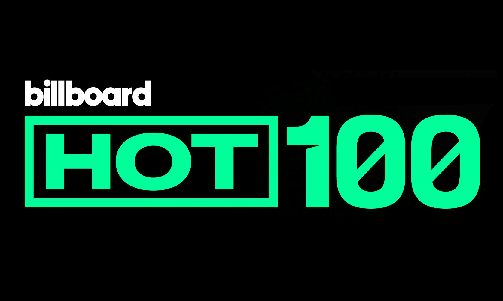
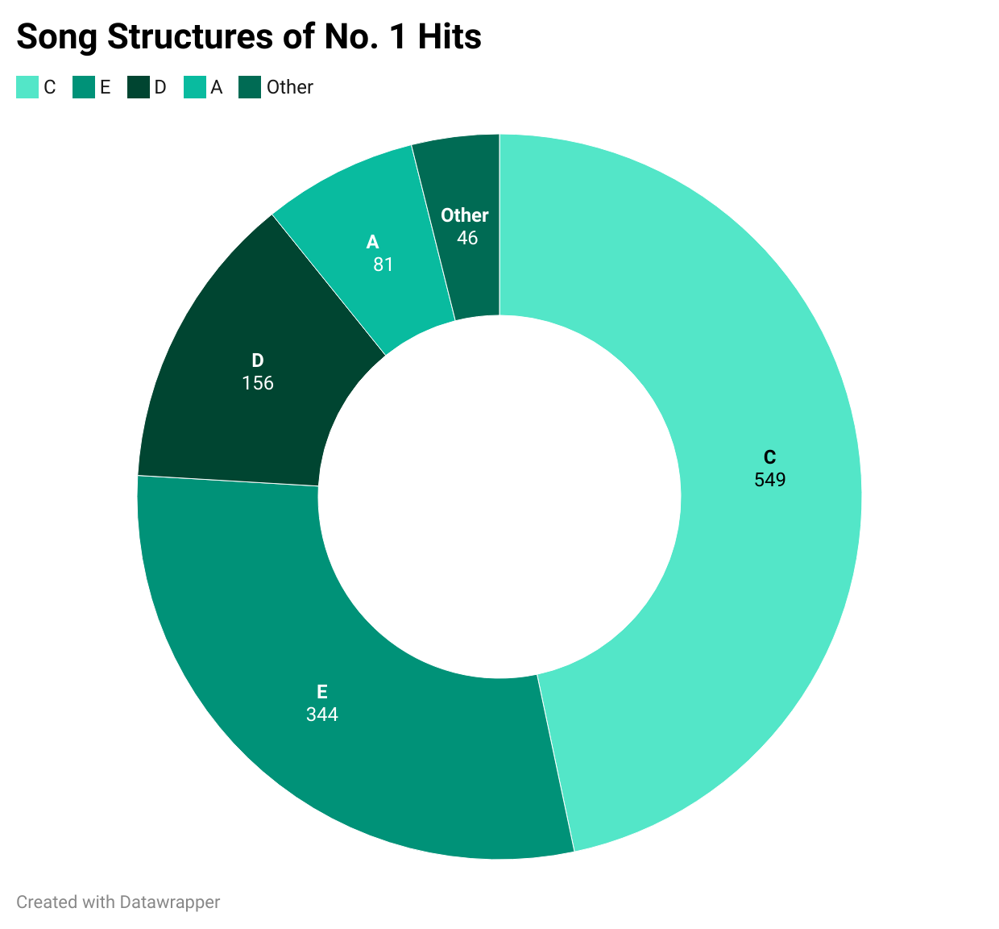
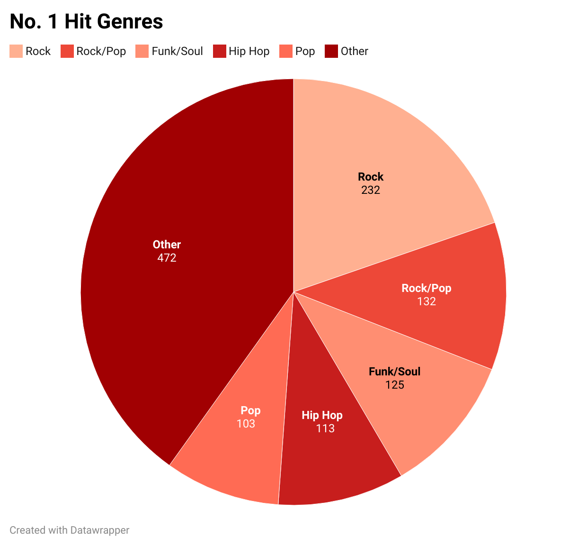
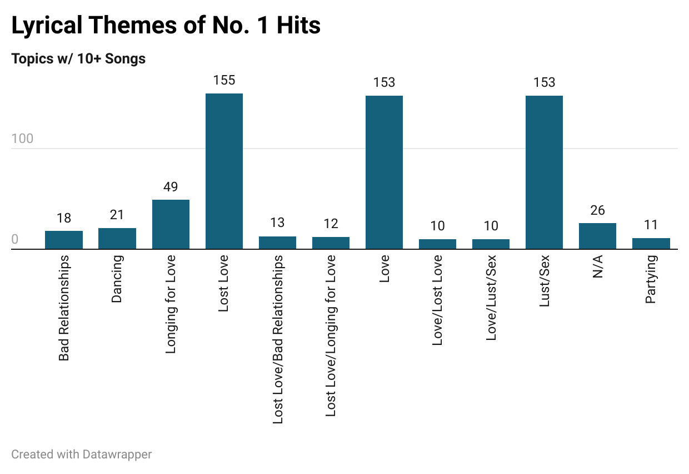

Music is everywhere. Millions of Americans soundtrack their lives with thousands of minutes of music — a fact embarrassingly revealed each December by their Spotify Wrapped recaps.
Syracuse University is no exception. And with the recent development of its Bandier program, SU has begun taking a vested interest in the development of musical professionals.
One could easily compare music to a mode of scientific exploration such as chemistry, where scientists experiment by mixing several different periodic elements in order to produce a desired reaction. That desired reaction can vary depending on the type of experiment — whether it be a combustion reaction, an oxidation reaction or a decomposition reaction.
Similarly, you could view artists as chemists, playing with different compositional factors — or elements, to use a scientific term — in order to achieve a desired reaction. That desired reaction can vary, depending on the artist and the song. But you'd be hard pressed to find a musician who wouldn't like to reach the top of the Billboard Hot 100.

Since 1958, Billboard — an American music magazine — has tracked the chart success of some of America's most popular songs. Over 30,000 songs have graced the Billboard Hot 100 in its decades-long history, per Billboard, but less than 4% of those have ever climbed to the top of the chart. What sets those songs apart? By analyzing Chris Dalla Riva's Billboard Hot 100 Database — which tracks 1,177 No. 1 hits from Aug. 4, 1958 to Jan. 11, 2025 — that's what this article aims to examine.
For this piece, I reached out to former Billboard editorial director Bill Werde, who spearheaded the magazine's 2010 relaunch of billboard.com, to gain more insight into what factors help a song become a hit.
Through email, he explained that the Hot 100's methodology isn't static, and it shifts in response to industry changes. He maintained that it is generally a mix of streaming data, AirPlay, downloads and physical sales.

Werde — like many musicians worldwide — found it difficult to pinpoint a select few determining factors that significantly affect a song's chart success. But he mentioned an artist's narrative — as in the story that the artist has been building through their career — and a song's chorus as possible key factors in its success.
"People generally like big hooks and big choruses that they can sing along to and get stuck in their head," Werde said in a written statement.
The data supports his sentiment. Dalla Riva's dataset charts each hit's structure, using letters and numbers to code each song. It's a complex methodology, but for this story's purposes, just know that songs listed as C and E include choruses, while songs listed as A, D, F and I do not.
As shown on the left, there are 549 songs charted with a C and 344 songs with an E. When you add the two up, that results in 893 No. 1 hits with choruses. It's an overwhelming 75.9% of the dataset, lending credence to the idea that a strong hook could be crucial to a song's chart success.
Historically speaking, rock songs have dominated the charts. A vast variety of music has been represented on the Billboard charts, but the most popular genre is rock — with 232 No. 1 hits. No other genre has reached 200, with pop rock checking in at second with 132 hits.
In Werde's opinion, though, rock's popularity isn't necessarily indicative of present musical trends. He thinks the genre's dominance over the charts is something that was perpetuated by a homogenized group of people who funded and distributed music, and modern listeners are branching out more in the streaming era.
“Now that we are in the streaming era — and all artists have access to all fans, and all fans have access to all music whenever they want it — I think now you start to see a much more true picture of people's tastes,” Werde said in his statement.
Werde points to foreign countries' music consumption habits as evidence to support his point. Around the world, Werde says, streaming has caused trends where foreign listeners tend to listen to local artists, moving away from the American and British artists that were historically pushed at them.
“Streaming gives us a more true picture of what music fans actually want,” Werde wrote.

When it came to song lengths, there was a wide range of variance in the data. Yet, the most popular values all seemed to be centered around 230 seconds — or three minutes and 50 seconds.
In response to a question asking about this trend in song lengths, Werde pointed to radio play, saying that songs historically needed to be between three to four minutes for optimal radio consumption. Yet, with the advent of streaming and listeners' attention spans shortening, he has begun to see those figures decrease.
“From the data I've looked at, hit songs are actually trending shorter these days,” Werde said. “I think it makes sense, when you consider the increasingly short attention span of people in the social media and short form video era.”

Dalla Riva's database revealed a ton of tendencies when it came to the public's music consumption. But the most striking of them all was a remarkable commonality in terms of the lyrical content of No. 1 hits.
There was a fair bit of variance in the lyrical focus of No. 1 hits, albeit nowhere near as much as song lengths. Yet, the most popular topics were some blend of love, lust and sex. As you can see in the chart to the right, lost love, love and lust/sex were the most popular lyrical topics, with over 150 No. 1 hits each. No other lyrical topic has over 100.
To Werde, it's fitting. After all, as stated at the beginning of this article, music soundtracks people's lives. It would be naive to think that wouldn't include some amalgamation of love, lust or sexual satisfaction.
“Music is the soundtrack to people's lives, and certain themes are always going to be the most relevant,” Werde said. “Yes, that includes love and sex.”